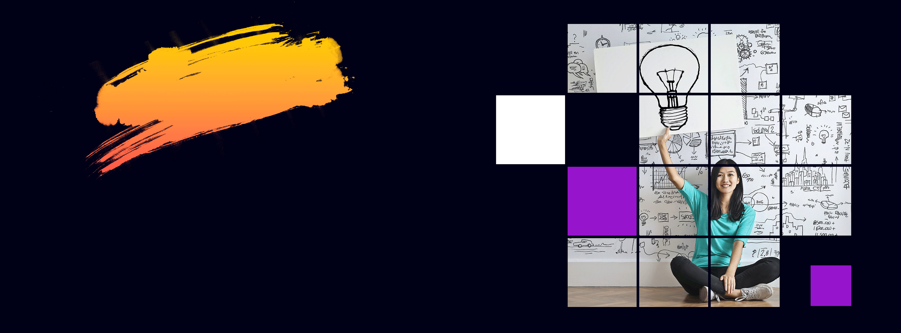

Prodesign
Um equilíbrio envolvente entre estilo tecnológico e expressão artística é destacado na marca, onde a fusão do escudo com a distintiva combinação das letras P e D representa a união entre "Pro" e "Design", complementada por uma paleta de cores em degradê.
No site da empresa, um banner principal animado em loop foi concebido, inspirado na metáfora da lâmpada, simbolizando o nascimento contínuo de novas ideias. Além disso, uma imagem interativa foi criada para ilustrar a conexão dinâmica da marca com as redes sociais, evidenciando sua presença e participação ativa.
Como complemento, um vídeo de apresentação foi planejado, roteirizado e editado para oferecer uma visão abrangente dos serviços oferecidos pela empresa. Este vídeo destaca de maneira envolvente e informativa as capacidades e diferenciais, consolidando a identidade da marca de maneira cativante.
Serviços e Tecnologias
Adobe Photoshop, Adobe Premiere Pro.
'Desenvolvimento Web: JavaScript, Html, Css e hospedado na Vercel.
- 